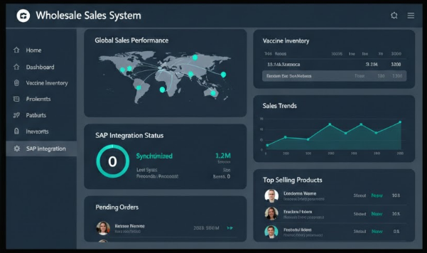

salud
salud
VACUNATE
Plataforma nacional de agendamiento y gestión de vacunas COVID-19, utilizada por todo el sistema de salud pública de Paraguay.
PHP · Laravel · MySQL · PostgreSQL
Construyo y depuro los sistemas que hacen que los datos de salud se puedan intercambiar con confianza entre países, hospitales y billeteras digitales — desde APIs REST hasta bundles FHIR validados contra Gazelle, en producción para el Ministerio de Salud de Paraguay.
9+ años diseñando e implementando sistemas de salud pública en Paraguay, hoy enfocado en llevar esa experiencia a equipos de Healthtech y Fintech remotos.
Senior Backend & Health Interoperability Developer en la Dirección General de TICs del Ministerio de Salud Pública de Paraguay (DGTIC / MSPBS).
Participé en todas las etapas del desarrollo — planificación, diseño, backend y, cuando hace falta, frontend — siempre con foco en calidad, rendimiento y en que el sistema siga funcionando cuando de verdad importa: en un centro de salud, en una frontera, en medio de un connectathon.
Actualmente trabajo en el ecosistema RACSEL / PH4H: emisión y verificación de credenciales de salud (IPS, ICVP, MEOW), interconsultas transfronterizas, hardening de nodos HAPI FHIR y depuración de validación de bundles contra Gazelle.
Backend primero, con la interoperabilidad en salud como especialización — y el resto del stack necesario para llevar un sistema de punta a punta.
9+ años construyendo soluciones web escalables para el sector público y privado, con especialización en sistemas de salud e infraestructura crítica.
Universidad Tecnológica Intercontinental, Paraguay · desarrollando tesis final
Universidad Tecnológica Intercontinental, Paraguay
Dirección General de TICs (DGTIC) — Ministerio de Salud Pública y Bienestar Social
Stack: PHP, Laravel, Java, Struts2, Spring, Go, Python, PostgreSQL, MySQL, Docker, Nginx, HAPI FHIR
ADIGI EAS
Stack: PHP, Laravel, MySQL, Digital Ocean, Git, Postman
Freelance
Stack: Java, Spring, PostgreSQL, MySQL, HTML, CSS, JavaScript, jQuery
Sistemas que diseñé e implementé, tanto en instituciones públicas como de forma independiente — de plataformas nacionales de salud a sistemas empresariales.
salud
Plataforma nacional de agendamiento y gestión de vacunas COVID-19, utilizada por todo el sistema de salud pública de Paraguay.
PHP · Laravel · MySQL · PostgreSQL
 salud
salud
Sistema nacional de telesalud para agendamiento de test, seguimiento de casos y soporte a pacientes durante la pandemia.
PHP · Java · Struts2 · PostgreSQL
Visores de bundles FHIR (MedicationRequest, Encounter, DiagnosticReport, Observation) para credenciales de salud RACSEL/PH4H, con capa de resumen para clínicos.
PHP · FHIR R4 · HAPI FHIR

empresarialSistema empresarial con integración a SAP y múltiples APIs externas para gestión de ventas y stock.
PHP · Laravel · MySQL · SAP
Sistema de gestión de calendario y asistencia docente para el sector educativo.
PHP · MySQL · JavaScript
Facturación, inventario y generación de reportes para optimizar la operación de un restaurante.
Java · Spring · PostgreSQL
Soluciones digitales personalizadas, eficientes y escalables — de APIs robustas a integraciones complejas de sistemas.
Diseño e implementación de APIs REST y servicios robustos con Laravel, Spring Boot, Flask y Node.js.
Desarrollo de sistemas de salud especializados, plataformas de telesalud y soluciones de interoperabilidad basadas en FHIR.
Modelado, normalización y optimización de bases de datos relacionales como PostgreSQL y MySQL.
Integración de sistemas empresariales con APIs externas, SAP y otras plataformas de negocio.
Aplicaciones web completas, con frontend responsivo (React, Vue) y backend escalable.
Contenerización con Docker, pipelines CI/CD, despliegue y monitoreo de ambientes de desarrollo.
Comentarios de colegas y responsables de proyecto con los que trabajé en distintos sistemas.
"Miguel fue clave en la implementación de nuestros sistemas nacionales de vigilancia en salud. Su conocimiento técnico y compromiso con la calidad marcaron la diferencia en el éxito del proyecto."
"Trabajar con Miguel en la integración de nuestro sistema mayorista fue excepcional. Su capacidad para traducir requerimientos complejos en soluciones técnicas eficientes es notable."
"Confiamos en Miguel el desarrollo de nuestra plataforma y superó las expectativas. Siempre proactivo, profesional y con excelente capacidad de resolución de problemas."
"Trabajar con Miguel ha sido una excelente experiencia. Su capacidad para liderar proyectos técnicos y entregar resultados funcionales y estables es admirable."
"Trabajé con Miguel en múltiples proyectos nacionales de salud. No solo entiende de tecnología, también comprende las necesidades del usuario, lo que lo hace valioso para cualquier equipo."
¿Buscás sumar a alguien con experiencia real en sistemas de salud e interoperabilidad, o simplemente querés charlar sobre FHIR? Elegí el canal que prefieras — te respondo directamente.
+595 986 755 760
Enviar mensajemike.mavc27@gmail.com
Escribir email/in/miguel-villalba-673517181
Conectar